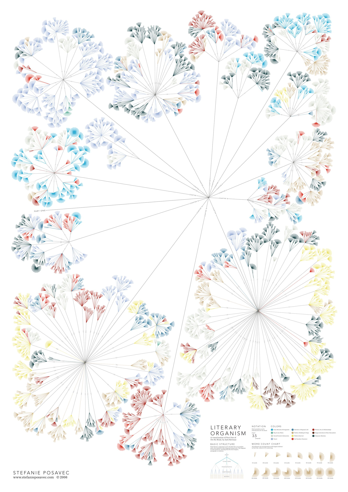
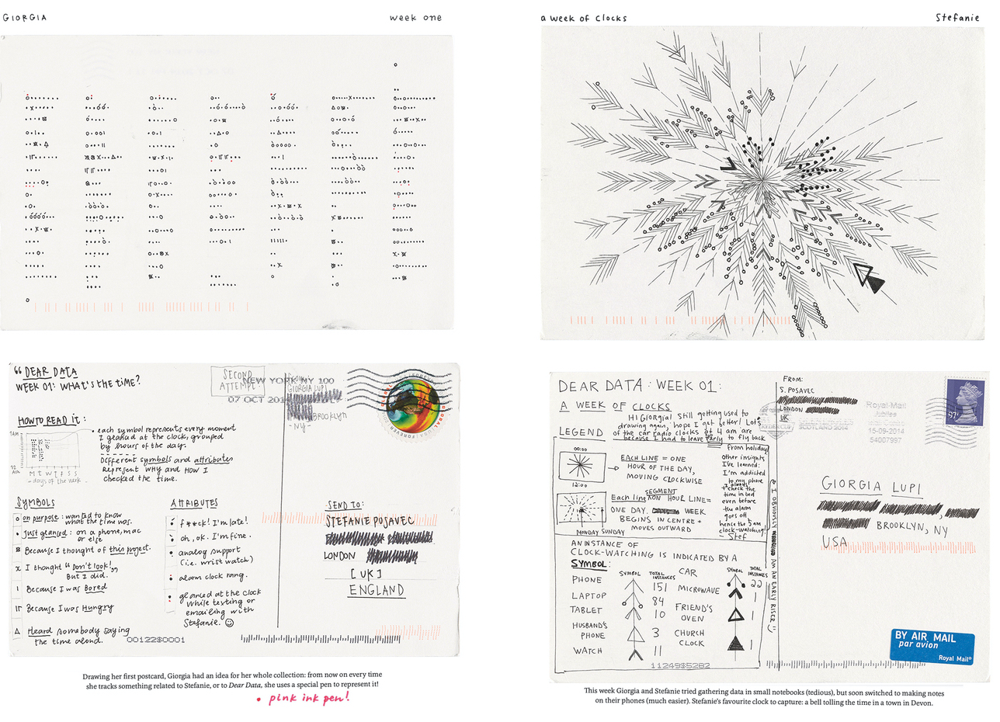

¡Hola 👋! Espera mientras comienza la sesión.
Antes que todo, ¿cómo están?
Visualización de Información
IIC2026 2020-2
Codificaciones, marcas y canales
Visualización de Información
IIC2026 2020-2
Repaso
Repaso
1. El cómo
2. Marcas y canales
3. Utilizar marcas y canales
¿Qué? — datos
¿Por qué? — acciones o tareas
¿Cómo? — codificaciones o idioms
Codificación visual y de interacción
- Definir el cómo.
- Idiom: enfoque distintivo de codificar información o manipularla.
- Hay decisiones visuales y decisiones de interacción.
(dato, tarea, idiom)
Idioms visuales
Idioms de interacción
Marcas
- Cero-dimensionales
- Uni-dimensionales
- Bi-dimensionales
- Tri-dimensionales
Marcas
- Cero-dimensionales
- Uni-dimensionales
- Bi-dimensionales
- Tri-dimensionales

Canales
- Posición unidimensional
- Posición bidimensional
- Forma
- Curvatura
- Rotación
- Color de relleno o de borde:
- Matiz de color
- Saturación de color
- Luminancia de color
- Tamaño:
- Largo
- Área
- Volumen
- ...
Tipos de canales
Canales de identidad
Canales de magnitud
Tipos de marcas
Marca de ítem
Marca de conexión
Marca de contención
Glifos
¡Visualizaciones del día!
¡Visualizaciones del día!
Propuesto por estudiante Daniela Concha.
(Fuente: Writing without words de Stefanie Posavec)
¡Visualizaciones del día!
Propuesto por estudiante Daniela Concha.
(Fuente: Dear Data de Stefanie Posavec y Giorgia Lupi)
Utilizar marcas y canales
No todos los canales no son iguales o equivalentes. La representación del mismo atributo a través de canales distintos los percibimos de forma distinta.
Principio de expresividad
Principio de efectividad
Principio de expresividad
Canales de identidad ↔️ Atributos categóricos
Canales de magnitud ↔️ Atributos ordenados
Principio de efectividad
Próximamente...
¿Más dudas?
Próximos eventos:
Durante hoy o mañana se les compartirá la retroalimentación de la Entrega 1.
Próximos eventos:
Durante hoy o mañana se les compartirá la retroalimentación de la Entrega 1.
Próximo viernes 11 de septiembre (20:00) es la entrega del Hito 1.
Próximos eventos:
Durante hoy o mañana se les compartirá la retroalimentación de la Entrega 1.
Próximo viernes 11 de septiembre (20:00) es la entrega del Hito 1.
Las sesiones antes de la semana del receso las dedicaremos a aprender D3.js